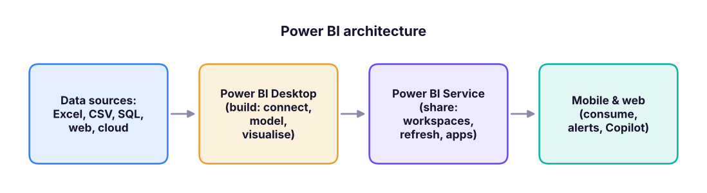
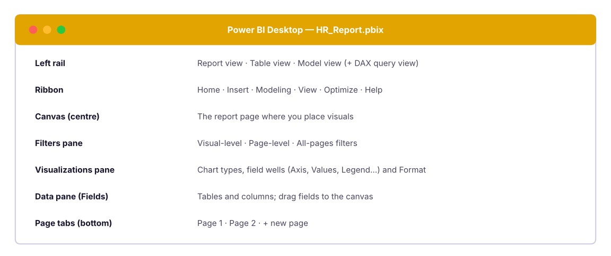
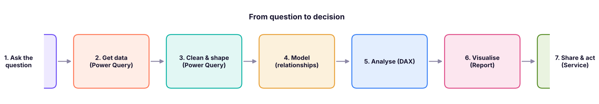
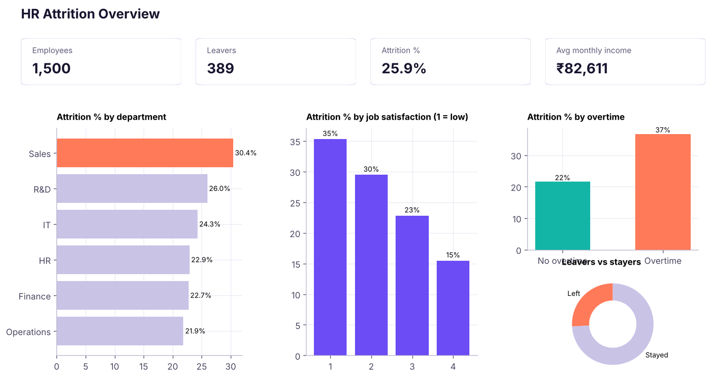
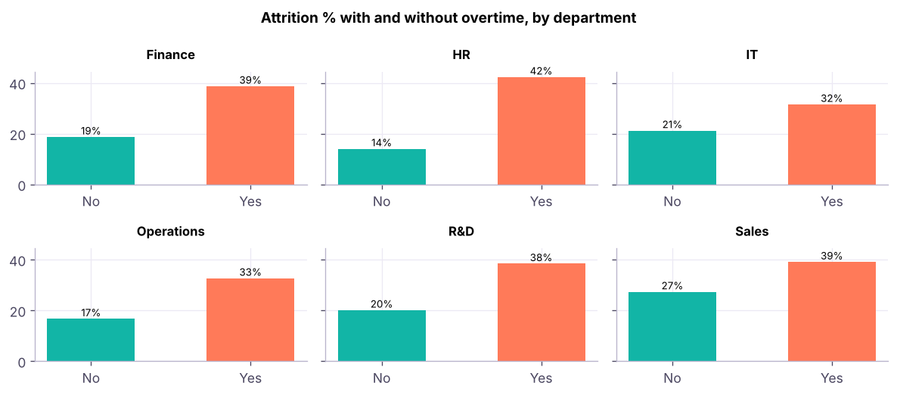

Getting Started with Power BI & Your First HR Report
Understand what Power BI is and how its parts fit together, install Power BI Desktop, tour the three views, follow the ETL and analytics stages, and build a complete first report on HR data: cards, bar and column charts, a donut, slicers, a year column with DAX, groups and small multiples.
- Describe Power BI Desktop, the Service and Mobile, and how data flows between them
- Explain ETL and the stages of the data-analytics process, and map them to Power BI tools
- Navigate Report, Table and Model views, and the Fields, Visualizations and Filters panes
- Load a CSV, check data types and build cards, bar/column charts, a matrix, a donut and slicers
- Add a calculated column with DAX (YEAR), create data groups, and use small multiples
What is Power BI?
Power BI is Microsoft's business-intelligence platform: it connects to data, cleans and models it, and turns it into interactive reports and dashboards that people can share. In 2026 it is part of Microsoft Fabric, Microsoft's all-in-one analytics platform, and it is one of the most requested tools in analyst job posts, alongside Excel, SQL and Tableau.

| Component | What it is | Who uses it |
|---|---|---|
| Power BI Desktop | Free Windows application to build data models and reports (.pbix) |
Analysts, developers |
| Power BI Service (app.powerbi.com) | Cloud site to publish, share, schedule refresh, create dashboards and apps | Analysts and report consumers |
| Power BI Mobile | iOS/Android apps to view reports and get alerts | Managers on the go |
| Power BI Report Builder | Paginated, print-ready reports (invoices, statements) | Report developers |
| On-premises data gateway | Secure bridge so the cloud can refresh data from your own servers | Admins |
| Power BI Report Server | Self-hosted option for organisations that cannot use the cloud | IT |
| Copilot | AI assistant that writes DAX, builds report pages and summarises insights (needs a Fabric/Premium capacity) | Everyone |
In Power BI a report is one or more pages of interactive visuals built on a data model. A dashboard (Service only) is a single page of pinned tiles from different reports. Many teams use reports only, or share them as an app.
Licences in brief
| Licence | Use |
|---|---|
| Power BI Desktop | Free: build and save locally |
| Free (Service) | Personal use in "My workspace"; cannot share with others |
| Pro | Publish and share with other Pro users (about US$14 per user per month) |
| Premium Per User / Fabric capacity | Larger models, AI features, share with free users |
(Prices change; check Microsoft's current pricing page.)
Installing Power BI Desktop
- Easiest: open the Microsoft Store, search "Power BI Desktop" and click Install (it updates itself every month).
- Or download it from the Microsoft Power BI website → Download → Power BI Desktop.
- Requirements: Windows 10/11 (64-bit), 4 GB+ RAM (8 GB+ recommended). There is no Mac version: Mac users can use the Service in a browser, a Windows virtual machine, or Windows 365.
- Start the app and sign in with a work or school account (optional for building locally).
The three views

| View | Icon | Use it to |
|---|---|---|
| Report | bar chart | Design the report pages |
| Table (Data) | grid | Inspect the data and create calculated columns and measures |
| Model | diagram | See and edit relationships between tables |
| DAX query view | { } |
Run DAX queries and test measures |
ETL and the analytics process
ETL = Extract (get data from sources), Transform (clean and reshape it), Load (store it in the model). In Power BI, Extract and Transform are done in Power Query, and Load puts the result into the data model. (You met Power Query in Excel Lesson 12: it is the same engine.)

Always start with the question: "Why are people leaving?" decides which data and visuals you need. The worst Power BI reports are tours of every chart type with no question.
Your first report: HR attrition
HR wants a one-page report on the company's 1,500 employees: how many there are, how many left (attrition), where attrition is highest, and whether overtime, job satisfaction or income play a role. Use hr_employees.csv.
The data (first rows):
import pandas as pd
hr = pd.read_csv("hr_employees.csv", parse_dates=["hire_date"])
print(hr.shape)
hr.head(5)(1500, 15)
| emp_id | gender | age | department | job_title | education | hire_date | years_at_company | monthly_income | job_satisfaction | overtime | distance_from_home_km | performance_rating | city | attrition | |
|---|---|---|---|---|---|---|---|---|---|---|---|---|---|---|---|
| 0 | E00001 | Male | 39 | Operations | Operations Manager | Bachelor's | 2025-05-26 | 0 | 74500 | 2 | Yes | 28 | 3 | Bengaluru | No |
| 1 | E00002 | Female | 45 | IT | Tester | Bachelor's | 2020-10-17 | 5 | 61417 | 1 | No | 25 | 3 | Mumbai | No |
| 2 | E00003 | Male | 41 | IT | Tester | Bachelor's | 2019-05-06 | 6 | 59167 | 4 | Yes | 18 | 4 | Bengaluru | No |
| 3 | E00004 | Male | 21 | R&D | Data Scientist | Bachelor's | 2025-08-23 | 0 | 51500 | 4 | No | 28 | 1 | Mumbai | Yes |
| 4 | E00005 | Male | 41 | Sales | Sales Executive | Master's | 2015-08-24 | 10 | 128333 | 1 | No | 3 | 2 | Pune | No |
Step 1: get the data
- Home → Get data → Text/CSV → choose
hr_employees.csv. - The preview shows the columns and detected data types. Click Transform Data (not Load) to check types in Power Query.
- Confirm:
age,years_at_company,monthly_income,job_satisfaction,performance_ratingare whole numbers;hire_dateis Date; the rest are text. - Home → Close & Apply.
In the Data pane you now see the table hr_employees with a Σ next to numeric fields (they can be summed) and no symbol next to text fields.
Step 2: KPI cards
Drag fields onto the canvas, then choose the Card visual:
- Employees = Count of
emp_id - Attrition (leavers): use a measure (Lesson 3 explains measures):
Leavers = CALCULATE ( COUNTROWS ( hr_employees ), hr_employees[attrition] = "Yes" ) - Attrition % =
DIVIDE ( [Leavers], COUNTROWS ( hr_employees ) ), formatted as a percentage - Average monthly income = Average of
monthly_income
n = len(hr); leavers = (hr.attrition == "Yes").sum()
print(f"Employees : {n:,}")
print(f"Leavers : {leavers:,}")
print(f"Attrition % : {leavers / n:.1%}")
print(f"Avg income (₹) : {hr.monthly_income.mean():,.0f}")Employees : 1,500 Leavers : 389 Attrition % : 25.9% Avg income (₹) : 82,611
Step 3: bar, column and donut charts
- Clustered bar chart: Y-axis
department, X-axis =Attrition %→ ranks departments. - Clustered column chart: X-axis
job_satisfaction, Y-axisAttrition %. - Donut chart: Legend
attrition, Values = count ofemp_id. - Matrix: Rows
department, Columnsovertime, ValuesAttrition %(turns into a heat map with conditional formatting, Lesson 5). - Slicers:
gender,education,city.

Step 4: a calculated column with DAX
We want to see joining trends by year, but the table has only hire_date. Add a calculated column: Table view (or Modeling) → New column:
Hire Year = YEAR ( hr_employees[hire_date] )A calculated column is evaluated row by row when the data loads and stored in the model, just like a new column in Excel. Now a line/column chart of headcount by hire year works:
hr["hire_year"] = hr.hire_date.dt.year
by_year = hr.groupby("hire_year").agg(hired=("emp_id", "count"), left=("left", "sum"))
by_year["attrition_%"] = (by_year.left / by_year.hired * 100).round(1)
by_year.tail(8)| hired | left | attrition_% | |
|---|---|---|---|
| hire_year | |||
| 2019 | 82 | 16 | 19.5 |
| 2020 | 85 | 20 | 23.5 |
| 2021 | 120 | 22 | 18.3 |
| 2022 | 136 | 35 | 25.7 |
| 2023 | 196 | 60 | 30.6 |
| 2024 | 234 | 71 | 30.3 |
| 2025 | 284 | 93 | 32.7 |
| 2026 | 64 | 17 | 26.6 |
Step 5: data groups and bins
Groups combine values into custom categories, such as the "age band" below, without changing the source data:
- Bins (numbers): right-click the field → New group → Group type Bin → bin size 5 → creates
age (bins). - List groups (text): select several values → right-click → Group → rename, for example group Mumbai and Pune as "Maharashtra".
For flexible logic, a calculated column is more transparent:
Age Band =
SWITCH (
TRUE (),
hr_employees[age] < 25, "Under 25",
hr_employees[age] < 35, "25–34",
hr_employees[age] < 45, "35–44",
"45 and over"
)bands = pd.cut(hr.age, [0, 24, 34, 44, 120], labels=["Under 25", "25–34", "35–44", "45 and over"])
hr.groupby(bands, observed=False).agg(employees=("emp_id", "count"), attrition_pct=("left", lambda s: round(s.mean() * 100, 1)))| employees | attrition_pct | |
|---|---|---|
| age | ||
| Under 25 | 148 | 35.1 |
| 25–34 | 624 | 26.9 |
| 35–44 | 574 | 23.5 |
| 45 and over | 154 | 22.1 |
Step 6: small multiples
Small multiples split one visual into a grid of identical mini-charts by a field. Drag department into the visual's Small multiples well: you get one small column chart of attrition by satisfaction for every department. This lets you compare patterns across groups at a glance without a cluttered legend.

What does the report tell us?
t = hr.groupby("overtime").left.agg(["count", "mean"]); t["mean"] = (t["mean"] * 100).round(1)
t.columns = ["employees", "attrition_%"]
print(t.to_string()); print()
low = hr[hr.job_satisfaction <= 2].left.mean() * 100; high = hr[hr.job_satisfaction >= 3].left.mean() * 100
print(f"Attrition for satisfaction 1–2: {low:.1f}% vs 3–4: {high:.1f}%")employees attrition_% overtime No 1067 21.6 Yes 433 36.7 Attrition for satisfaction 1–2: 32.5% vs 3–4: 19.4%
Insight sentences for a manager: overtime workers leave far more often than others; low satisfaction scores go with higher attrition; Sales has the highest attrition among departments. Notice the careful wording: these are associations in the data, not proof of cause. (The ML track shows how to test them properly.)
Good habits from day one
- Name things clearly:
Attrition %, notMeasure 3; rename pages ("HR Overview"). - Put measures in a dedicated table later (Lesson 3) and format them (percentage, thousands separator).
- Check data types in Power Query before loading.
- One idea per page; the title should say the insight.
- Save often (
.pbix), and use clear version names. - Do not use pie charts with many slices; prefer bars (ranked) and use donuts only for 2–3 parts.
- Copilot can create a report page from a prompt ("Build an attrition overview for HR"), write DAX measures and summarise a page. It needs a paid Fabric/Premium capacity and your data to be well-modelled and named.
- Power BI Project (PBIP) format stores the report as text files, so teams can use Git and code review.
- TMDL (Tabular Model Definition Language) and DAX query view make models easier to script and test.
- Direct Lake (Fabric) reads Delta tables directly with import-like speed. (See Lesson 6.)
Summary
- Power BI = Desktop (build) + Service (share) + Mobile (consume), now inside Microsoft Fabric.
- ETL: Extract and Transform in Power Query, Load into the model; analytics stages run from question to decision.
- Three views: Report, Table, Model; build with the Fields, Visualizations and Filters panes.
- A card shows a KPI; bar/column charts compare categories; a donut shows 2–3 parts; a matrix is a pivot table; slicers filter.
- A DAX calculated column (
YEAR,SWITCH) is computed row by row at load time; groups/bins categorise without changing the data; small multiples repeat a chart per category.
1. In Power BI, where do you perform the Extract and Transform steps of ETL?
2. Which view shows relationships between tables?
3. Power BI Desktop is available for:
4. What does a calculated column do?
5. Which visual repeats the same chart for every value of a field?
6. Which licence do you need to share a report with colleagues who also have Pro licences?
Build the page shown above in Power BI Desktop with hr_employees.csv. Then add: (1) a slicer for city and gender; (2) a matrix of attrition % by job_title and education; (3) an Age Band column and a column chart of attrition % by band; (4) a title text box that states your main finding.
Show solution
(1) Slicer visual, fields city, gender (Format → Slicer settings → Style: Tile or Dropdown). (2) Matrix: Rows job_title, Columns education, Values Attrition % (turn on Cell elements → Background colour for a heat map). (3) Use the SWITCH formula in this lesson; chart X-axis Age Band, Y-axis Attrition %; sort the axis in the right order using a sort-by-column. (4) Insert → Text box, for example "Overtime roughly doubles attrition in every department." Verify the claim against your visuals before you publish.
Q: What is the difference between Power BI Desktop and Service? Desktop is the free authoring tool for models and reports on Windows; the Service is the cloud platform to publish, share, refresh on a schedule, build dashboards and apps, and apply security.
Q: What is ETL and where is it done in Power BI? Extract, Transform, Load: Power Query connects to sources and applies transformation steps; the result is loaded into the VertiPaq in-memory model.
Q: Calculated column vs measure? A calculated column is evaluated per row at refresh time and stored (uses memory); a measure is evaluated at query time in the current filter context (uses CPU). Use measures for aggregations such as sums and ratios.
Q: Report vs dashboard? A report is multi-page and interactive, built on one model. A dashboard is a single page of pinned tiles from several reports, available only in the Service.